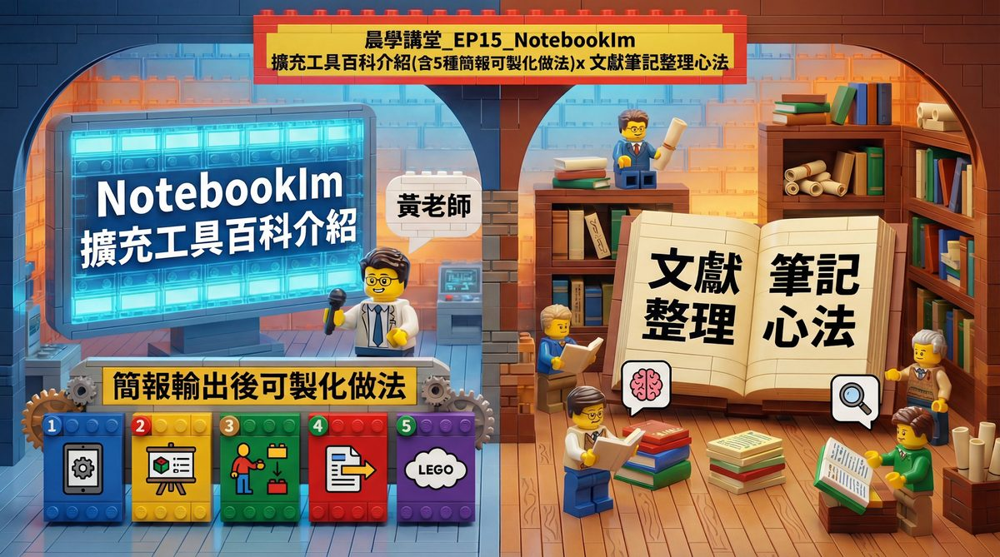

0. 課程資訊與教材
| 課程名稱 | EP15「NotebookLM 擴充工具百科介紹（含 5 種 NLM 簡報客製化做法）x 文獻筆記整理心法」 |
|---|---|
| 頻道 | 生成式 AI 應用電台・晨學講堂 |
| 直播日期 | 01月14日（三） |
| 教材 | 官方課程簡報 24 頁＋「NLM擴充工具箱」補充文件＋「NLM查驗Prompts」完整版查驗指令文件 |
| 本次學習重點 | ① NotebookLM 擴充工具介紹 ② 5 種簡報輸出客製化方式 ③ 實務流程心法（輸出→測試→調整）④ 文獻筆記關鍵心法（固定查驗指令，避免 AI 幻覺） |

💡 本集簡報為文字資訊型投影片（淡底色template背景＋純文字內容，非逐頁手繪或screenshot型式）；本頁以簡報完整文字內容與課程附帶的「NLM查驗Prompts」原始文件為主要依據整理，內容為真實課程內容，未經改寫杜撰，封面原圖直接嵌入本頁。
1. NotebookLM 擴充工具生態系統：六大工具
六大擴充工具協助資料整理、重點萃取與結構化，分為「分類型」與「擷取型」兩類。
| 工具 | 類型 | 定位／使用時機 |
|---|---|---|
| 1. NotebookLM 萬能工具箱 | 擷取型 | 快速複製筆記內容、匯出心智圖、固定保存常用的語音摘要提示詞，提升日常操作效率。 |
| 2. NotebookLM Mindmap Extractor | 擷取型 | 將長篇內容自動轉為結構正確、層級清楚的心智圖，用於理解脈絡、教學講解或簡報規劃。 |
| 3. NotebookLM 網頁匯入器 | 擷取型 | 蒐集資料階段，一鍵將網頁文章或 YouTube 影片直接匯入 NotebookLM，建立可追溯來源的筆記本。 |
| 4. Kortex | 擷取型 | 已在 ChatGPT 或其他 LLM 完成對話分析後，將成果系統化匯入 NotebookLM，或進行筆記本批次管理。 |
| 5. 筆記本分類（foldLM） | 分類型 | NotebookLM 筆記本數量逐漸增加後，建立清楚的分類結構，避免資料堆疊與知識迷航。 |
| 6. NotebookLM 生成簡報風格工具 | 擷取型 | 內容整理完成後，將 NotebookLM 的文字輸出轉化為「簡報導向」的結構與視覺呈現（BananaNL）。 |
💡 六工具各司其職：foldLM 負責「分類管理」；萬能工具箱／Mindmap Extractor／網頁匯入器／Kortex／簡報風格工具則負責「擷取與轉化」不同階段的內容。
2. 五種簡報輸出客製化再製方式
核心目標：讓 NotebookLM 簡報從「只能看」變成「可以改」。
| 方式 | 做法 | 優點 | 注意事項 |
|---|---|---|---|
| 1. Lovart | 將轉成圖片檔的簡報上傳，點選圖片上方「編輯元素」，平台自動讀取並產生新檔案。 | 自動拆解圖片元素、快速編輯文字內容。 | 過於複雜的圖片無法順利拆解；拆解時可能自動轉為簡體字；編輯後新圖片可能產生色差。 |
| 2. Canva | 上傳圖片 →「編輯」>「Brush」選取文字 → 自動轉為獨立圖層 → 用魔法橡皮擦移除原圖層污漬。 | 文字圖層完全分離；魔法橡皮擦功能強大。 | 複雜圖片無法順利拆解；可能消除原圖材質紋路。 |
| 3. NotebookLM 簡報編輯器（notebooklm.10xboost.org） | 專為 NotebookLM 簡報設計的線上編輯器。 | 專屬優化、線上編輯無需下載、維持原始簡報邏輯結構。 | 需要快速調整內容同時保持 NLM 原始風格時的最佳選擇。 |
| 4. DeckEdit.com | 線上編輯，並可直接轉換成 .ppt 格式。 | 免費免註冊；可在 PowerPoint 中深度編輯排版。 | 適合需要 PPT 格式後續編輯、團隊協作需要標準格式時使用。 |
| 5. Codia.ai（codia.ai/noteslide） | AI 驅動的簡報編輯與優化。 | 智能優化結構與內容、視覺化增強、一鍵自動美化。 | 補充資源：另有 Gemini 版本（茶米老師版）。 |
⚠️ 補充工具：NBLM2PPTX（GitHub：laihenyi/NBLM2PPTX）是專門把 NotebookLM 輸出的 PDF 轉成 PPTX 檔案的開源工具，適合需要離線二次編輯的情境。
3. 簡報與筆記實務流程：「輸出 → 測試 → 調整」的迭代心法
NotebookLM 簡報輸出不是一次到位，而是需要經過「輸出 → 測試 → 調整」的迭代流程。
輸出邏輯與快速應用技巧
- AI 根據來源文件自動判斷結構。
- 透過提示詞引導調整方向。
- 多次迭代才能達到理想效果。
| 技巧 | 範例 |
|---|---|
| 明確指定結構 | 如「我需要 10 頁簡報」。 |
| 提供具體範例 | 如「參考 TED 演講風格」。 |
| 分段生成 | 先生成大綱，確認後再生成內文。 |
三階段：從「能用」到「好用」
1
階段 1：輸出（Output）
上傳來源文件到 NotebookLM → 使用提示詞生成初版簡報 → 下載 PDF 格式檢視。
2
階段 2：測試（Test）
檢查簡報結構是否符合需求、確認內容是否來自來源文件、評估視覺呈現是否清晰。
3
階段 3：調整（Adjust）
修改提示詞重新生成、使用五種客製化方式進行後製、迭代直到達到理想效果。
「不要期待一次完美，而是透過快速迭代逐步優化。」
—— 本集核心心法
4. 文獻筆記整理關鍵心法：NotebookLM 固定查驗指令
最大風險：AI 自行補充或推論。核心解法：建立固定查驗指令。建議每開一個新 Notebook，先貼一次指令。
標準版查驗指令核心規則
- 所有摘要、結論、數據，必須明確來自來源文件。
- 每一個重點後，列出來源文件名稱與對應章節。
- 不得自行補寫、推論、延伸解釋。
- 若來源未出現，直接回覆「資料中未出現，無法引述」。
- 不得合併不同文件的內容形成新結論。
三個版本：依需求選擇查驗強度
| 版本 | 適用情境 | 指令重點 |
|---|---|---|
| 標準版 | 一般研究、報告撰寫、日常資料整理。 | 平衡精確度與閱讀性；要求標示來源文件與章節；確保內容不偏離原意。 |
| 嚴謹版 | 學術論文、法律文件、關鍵事實查核。 | 絕對禁止推論與自行補充；若無資料需回報「未提及」；要求逐句引證，零容忍錯誤。 |
| 教學友善版 | 備課、製作講義、學生作業指導。 | 結構清晰易於學生閱讀；強調觀念的來源出處；保留延伸思考與討論空間。 |
完整版查驗指令（可直接複製使用）
NotebookLM 固定查驗指令（完整版）你是一位「來源導向（Grounded）的研究助理」，
只能根據我已上傳的文件回答，不得使用外部知識。
請依照以下【查驗流程】與【輸出格式】進行。
────────────────
【一、查驗流程（偽代碼，請內部遵守）】
FOR each 你要產生的敘述：
1. 判斷敘述類型：
- 數據 / 數值
- 研究結論
- 方法描述
- 描述性整理
2. 回到來源文件中：
- 定位對應章節或段落
- 確認是否「明確出現」
3. 判斷結果：
IF 無法在來源中定位：
標示為【資料中未出現，無法引述】
ELSE：
標示為【可查驗摘要】
END
禁止行為：
- 禁止補寫
- 禁止合理推論
- 禁止跨文件拼接新結論
- 禁止因內容較複雜而簡化或省略關鍵限制條件
（即使資料存在，也不可「偷懶擷取」）
────────────────
【二、輸出格式（請嚴格使用 Markdown）】
請使用以下格式輸出每一則內容：
### 可查驗摘要
- AI 摘要句：
> 「＿＿＿＿＿＿＿＿＿＿」
- 來源文件：
- 文件名稱：
- 作者／單位：
- 年份：
- 原文定位：
- 章節或段落重點：
- 原文關鍵語句（摘要式轉述即可，不需逐字）：
- 查驗判斷：
- ☐ 原文重述
- ☐ 摘要轉述（需人工改寫）
- ☐ 資料中未出現（不可引用）
────────────────
【三、總原則】
若你無法清楚指出來源與段落，請直接回覆：
【資料中未出現，無法引述】
請在上述規則下回答我的問題。
超極簡版（每次提問前加一句即可）
超極簡版所有回答都必須能回到我上傳的原文段落，若資料存在但你無法明確定位，請標示「資料中未出現，無法引述」。
💡 使用說明：研究／論文 Notebook 與課堂示範／學生練習建議用完整版；日常快速摘要用超極簡版即可。可搭配追問一句：「請指出上一則回答中，哪些內容『只能理解用，不能直接引用』。」
5. 常見誤區與 NotebookLM「偷懶」的解決方法
許多人認為 NotebookLM 因為「只根據來源回答」就不會出現幻覺；但實務上，更常見的風險其實是內容偷懶——資料明明存在，模型卻只擷取局部段落、忽略關鍵限制條件，甚至在未明確指示下選擇最容易生成的方向回應。這不是捏造，而是擷取深度不足與脈絡簡化所造成的偏差。
| 常見誤區 | 解決對策 |
|---|---|
| 過度信任自動摘要：誤以為 AI 讀完文件就能自動抓出所有重點，忽略了 AI 可能會「偷懶」或省略細節。 | 強制 Markdown 查驗紀錄：要求 AI 以 Markdown 表格格式輸出，並包含「原文引述」與「出處章節」欄位。 |
| 接受模糊的來源標示：滿足於「根據文件」這種籠統的說法，未要求具體指明是哪一份文件的哪一個章節。 | 建立固定查驗指令：使用標準化的 Prompt，明確規定「若無資料需回報無法引述」，杜絕 AI 瞎掰。 |
| 一次詢問過多問題：在單一指令中包含過多複雜要求，導致 AI 選擇性回答或產生幻覺。 | 拆解任務與分段驗證：將大問題拆解為小步驟，並逐一驗證每個步驟的輸出是否符合原文。 |
「NotebookLM 不太會亂編，但如果你沒規範，它會偷懶。」
—— 一句可直接對外說明的專業定位
6. 查驗原文的兩套方法：偽代碼 vs Markdown 模板
| 方法 | 做法 | 最佳適用情境 |
|---|---|---|
| 方法 1：偽代碼 | IF (Source contains X) THEN Extract X ELSE Return "Not Found" END IF ——強調邏輯判斷與執行流程，給予 AI 明確的思考路徑，適合處理複雜的條件限制。 | 需要精確邏輯推演的研究。 |
| 方法 2：Markdown 模板 | # 重點摘要 - {{Key_Point}} (Source: {{Page}}) # 結論 {{Conclusion}} ——強調輸出格式與結構規範，直接限制 AI 的回應框架，易於閱讀與後續排版應用。 | 標準化報告與筆記整理。 |
7. 資料來源與製作說明
- 原始教材：EP15「NotebookLM 擴充工具百科介紹（含 5 種 NLM 簡報客製化做法）x 文獻筆記整理心法」官方課程簡報 24 頁；「NLM擴充工具箱」補充說明文件；「NLM查驗Prompts」完整版查驗指令原始文件。
- 製作方式：下載原始簡報 pptx 與補充文件，逐字對照簡報文字內容與查驗指令原始文字，整理成本頁章節；封面原圖直接取自簡報內嵌圖片。內容為真實課程內容，未經改寫杜撰。
- 誠實聲明：本集簡報為文字資訊型投影片（淡色 template 背景＋純文字物件），除封面外其餘 23 頁背景圖僅為淡色裝飾底圖、不含實質畫面內容，故不逐頁附圖，改以完整文字內容呈現；本集資料夾錄影暫未逐句轉寫，逐字稿時間碼暫缺，如日後開放取得可再補入。
- 介面參考：頁面採全站現行「乾淨白底編輯風」版型（沿用 EP38 課堂筆記頁架構）。